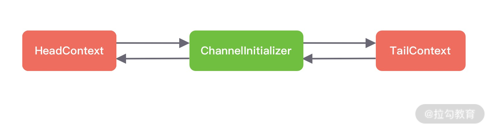
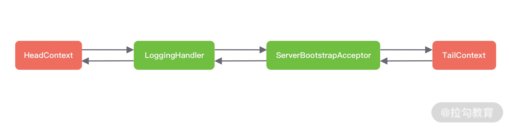
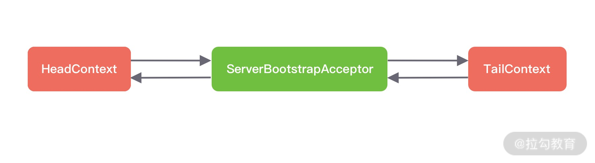
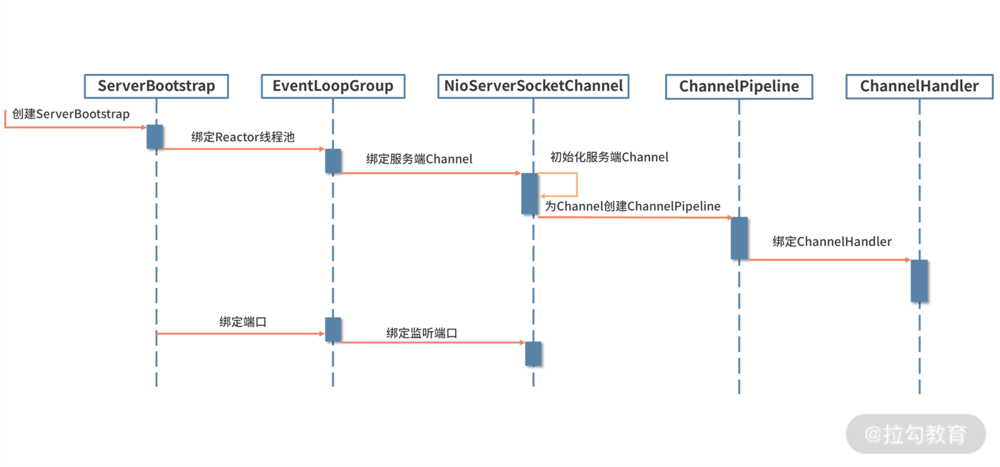

- 00 学好 Netty，是你修炼 Java 内功的必经之路.md.html
- 01 初识 Netty：为什么 Netty 这么流行？.md.html
- 02 纵览全局：把握 Netty 整体架构脉络.md.html
- 03 引导器作用：客户端和服务端启动都要做些什么？.md.html
- 04 事件调度层：为什么 EventLoop 是 Netty 的精髓？.md.html
- 05 服务编排层：Pipeline 如何协调各类 Handler ？.md.html
- 06 粘包拆包问题：如何获取一个完整的网络包？.md.html
- 07 接头暗语：如何利用 Netty 实现自定义协议通信？.md.html
- 08 开箱即用：Netty 支持哪些常用的解码器？.md.html
- 09 数据传输：writeAndFlush 处理流程剖析.md.html
- 10 双刃剑：合理管理 Netty 堆外内存.md.html
- 11 另起炉灶：Netty 数据传输载体 ByteBuf 详解.md.html
- 12 他山之石：高性能内存分配器 jemalloc 基本原理.md.html
- 13 举一反三：Netty 高性能内存管理设计（上）.md.html
- 14 举一反三：Netty 高性能内存管理设计（下）.md.html
- 15 轻量级对象回收站：Recycler 对象池技术解析.md.html
- 16 IO 加速：与众不同的 Netty 零拷贝技术.md.html
- 17 源码篇：从 Linux 出发深入剖析服务端启动流程.md.html
- 18 源码篇：解密 Netty Reactor 线程模型.md.html
- 19 源码篇：一个网络请求在 Netty 中的旅程.md.html
- 20 技巧篇：Netty 的 FastThreadLocal 究竟比 ThreadLocal 快在哪儿？.md.html
- 21 技巧篇：延迟任务处理神器之时间轮 HashedWheelTimer.md.html
- 22 技巧篇：高性能无锁队列 Mpsc Queue.md.html
- 23 架构设计：如何实现一个高性能分布式 RPC 框架.md.html
- 24 服务发布与订阅：搭建生产者和消费者的基础框架.md.html
- 25 远程通信：通信协议设计以及编解码的实现.md.html
- 26 服务治理：服务发现与负载均衡机制的实现.md.html
- 27 动态代理：为用户屏蔽 RPC 调用的底层细节.md.html
- 28 实战总结：RPC 实战总结与进阶延伸.md.html
- 29 编程思想：Netty 中应用了哪些设计模式？.md.html
- 30 实践总结：Netty 在项目开发中的一些最佳实践.md.html
- 31 结束语 技术成长之路：如何打造自己的技术体系.md.html
- 捐赠
17 源码篇：从 Linux 出发深入剖析服务端启动流程
通过前几章课程的学习，我们已经对 Netty 的技术思想和基本原理有了初步的认识，从今天这节课开始我们将正式进入 Netty 核心源码学习的课程。希望能够通过源码解析的方式让你更加深入理解 Netty 的精髓，如 Netty 的设计思想、工程技巧等，为之后继续深入研究 Netty 打下坚实的基础。
在课程开始之前，我想分享一下关于源码学习的几点经验和建议。第一，很多同学在开始学习源码时面临的第一个问题就是不知道从何下手，这个时候一定不能对着源码毫无意义地四处翻看。建议你可以通过 Hello World 或者 TestCase 作为源码学习的入口，然后再通过 Debug 断点的方式调试并跑通源码。第二，阅读源码一定要有全局观。首先要把握源码的主流程，避免刚开始陷入代码细节的死胡同。第三，源码一定要反复阅读，让自己每一次读都有不同的收获。我们可以通过画图、注释的方式帮助自己更容易理解源码的核心流程，方便后续的复习和回顾。
作为源码解析的第一节课，我们将深入分析 Netty 服务端的启动流程。启动服务的过程中我们可以了解到 Netty 各大核心组件的关系，这将是学习 Netty 源码一个非常好的切入点，让我们一起看看 Netty 的每个零件是如何运转起来的吧。
说明：本文参考的 Netty 源码版本为 4.1.42.Final。
从 Echo 服务器示例入手
在《引导器作用：客户端和服务端启动都要做些什么？》的课程中，我们介绍了如何使用引导器搭建服务端的基本框架。在这里我们实现了一个最简单的 Echo 服务器，用于调试 Netty 服务端启动的源码。
public class EchoServer {
public void startEchoServer(int port) throws Exception {
EventLoopGroup bossGroup = new NioEventLoopGroup();
EventLoopGroup workerGroup = new NioEventLoopGroup();
try {
ServerBootstrap b = new ServerBootstrap();
b.group(bossGroup, workerGroup)
.channel(NioServerSocketChannel.class)
.handler(new LoggingHandler(LogLevel.INFO)) // 设置ServerSocketChannel 对应的 Handler
.childHandler(new ChannelInitializer<SocketChannel>() { // 设置 SocketChannel 对应的 Handler
@Override
public void initChannel(SocketChannel ch) {
ch.pipeline().addLast(new FixedLengthFrameDecoder(10));
ch.pipeline().addLast(new ResponseSampleEncoder());
ch.pipeline().addLast(new RequestSampleHandler());
}
});
ChannelFuture f = b.bind(port).sync();
f.channel().closeFuture().sync();
} finally {
bossGroup.shutdownGracefully();
workerGroup.shutdownGracefully();
}
}
}
我们以引导器 ServerBootstrap 为切入点，开始深入分析 Netty 服务端的启动流程。在服务端启动之前，需要配置 ServerBootstrap 的相关参数，这一步大致可以分为以下几个步骤：
- 配置 EventLoopGroup 线程组；
- 配置 Channel 的类型；
- 设置 ServerSocketChannel 对应的 Handler；
- 设置网络监听的端口；
- 设置 SocketChannel 对应的 Handler；
- 配置 Channel 参数。
配置 ServerBootstrap 参数的过程非常简单，把参数值保存在 ServerBootstrap 定义的成员变量里就可以了。我们可以看下 ServerBootstrap 的成员变量定义，基本与 ServerBootstrap 暴露出来的配置方法是一一对应的。如下所示，我以注释的形式说明每个成员变量对应的调用方法。
volatile EventLoopGroup group; // group()
volatile EventLoopGroup childGroup; // group()
volatile ChannelFactory<? extends C> channelFactory; // channel()
volatile SocketAddress localAddress; // localAddress
Map<ChannelOption<?>, Object> childOptions = new ConcurrentHashMap<ChannelOption<?>, Object>(); // childOption()
volatile ChannelHandler childHandler; // childHandler()
ServerBootstrapConfig config = new ServerBootstrapConfig(this);
关于 ServerBootstrap 如何为每个成员变量保存参数的过程，我们就不一一展开了，你可以理解为这部分工作只是一个前置准备，课后你可以自己跟进下每个方法的源码。今天我们核心聚焦在 b.bind().sync() 这行代码，bind() 才是真正进行服务器端口绑定和启动的入口，sync() 表示阻塞等待服务器启动完成。接下来我们对 bind() 方法进行展开分析。
在开始源码分析之前，我们带着以下几个问题边看边思考：
- Netty 自己实现的 Channel 与 JDK 底层的 Channel 是如何产生联系的？
- ChannelInitializer 这个特殊的 Handler 处理器的作用是什么？
- Pipeline 初始化的过程是什么样的？
服务端启动全过程
首先我们来看下 ServerBootstrap 中 bind() 方法的源码实现：
public ChannelFuture bind() {
validate();
SocketAddress localAddress = this.localAddress;
if (localAddress == null) {
throw new IllegalStateException("localAddress not set");
}
return doBind(localAddress);
}
private ChannelFuture doBind(final SocketAddress localAddress) {
final ChannelFuture regFuture = initAndRegister();
final Channel channel = regFuture.channel();
if (regFuture.cause() != null) {
return regFuture;
}
if (regFuture.isDone()) {
ChannelPromise promise = channel.newPromise();
doBind0(regFuture, channel, localAddress, promise);
return promise;
} else {
final PendingRegistrationPromise promise = new PendingRegistrationPromise(channel);
regFuture.addListener(new ChannelFutureListener() {
@Override
public void operationComplete(ChannelFuture future) throws Exception {
Throwable cause = future.cause();
if (cause != null) {
promise.setFailure(cause);
} else {
promise.registered();
doBind0(regFuture, channel, localAddress, promise);
}
}
});
return promise;
}
}
由此可见，doBind() 方法是我们需要分析的重点。我们再一起看下 doBind() 具体做了哪些事情：
- 调用 initAndRegister() 初始化并注册 Channel，同时返回一个 ChannelFuture 实例 regFuture，所以我们可以猜测出 initAndRegister() 是一个异步的过程。
- 接下来通过 regFuture.cause() 方法判断 initAndRegister() 的过程是否发生异常，如果发生异常则直接返回。
- regFuture.isDone() 表示 initAndRegister() 是否执行完毕，如果执行完毕则调用 doBind0() 进行 Socket 绑定。如果 initAndRegister() 还没有执行结束，regFuture 会添加一个 ChannelFutureListener 回调监听，当 initAndRegister() 执行结束后会调用 operationComplete()，同样通过 doBind0() 进行端口绑定。
doBind() 整个实现结构非常清晰，其中 initAndRegister() 负责 Channel 初始化和注册，doBind0() 用于端口绑定。这两个过程最为重要，下面我们分别进行详细的介绍。
服务端 Channel 初始化及注册
initAndRegister() 方法顾名思义，主要负责初始化和注册的相关工作，我们具体看下它的源码实现：
final ChannelFuture initAndRegister() {
Channel channel = null;
try {
channel = channelFactory.newChannel(); // 创建 Channel
init(channel); // 初始化 Channel
} catch (Throwable t) {
if (channel != null) {
channel.unsafe().closeForcibly();
return new DefaultChannelPromise(channel, GlobalEventExecutor.INSTANCE).setFailure(t);
}
return new DefaultChannelPromise(new FailedChannel(), GlobalEventExecutor.INSTANCE).setFailure(t);
}
ChannelFuture regFuture = config().group().register(channel); // 注册 Channel
if (regFuture.cause() != null) {
if (channel.isRegistered()) {
channel.close();
} else {
channel.unsafe().closeForcibly();
}
}
return regFuture;
}
initAndRegister() 可以分为三步：创建 Channel、初始化 Channel 和注册 Channel，接下来我们一步步进行拆解分析。
创建服务端 Channel
首先看下创建 Channel 的过程，直接跟进 channelFactory.newChannel() 的源码。
public class ReflectiveChannelFactory<T extends Channel> implements ChannelFactory<T> {
private final Constructor<? extends T> constructor;
public ReflectiveChannelFactory(Class<? extends T> clazz) {
ObjectUtil.checkNotNull(clazz, "clazz");
try {
this.constructor = clazz.getConstructor();
} catch (NoSuchMethodException e) {
throw new IllegalArgumentException("Class " + StringUtil.simpleClassName(clazz) +
" does not have a public non-arg constructor", e);
}
}
@Override
public T newChannel() {
try {
return constructor.newInstance(); // 反射创建对象
} catch (Throwable t) {
throw new ChannelException("Unable to create Channel from class " + constructor.getDeclaringClass(), t);
}
}
// 省略其他代码
}
在前面 Echo 服务器的示例中，我们通过 channel(NioServerSocketChannel.class) 配置 Channel 的类型，工厂类 ReflectiveChannelFactory 是在该过程中被创建的。从 constructor.newInstance() 我们可以看出，ReflectiveChannelFactory 通过反射创建出 NioServerSocketChannel 对象，所以我们重点需要关注 NioServerSocketChannel 的构造函数。
public NioServerSocketChannel() {
this(newSocket(DEFAULT_SELECTOR_PROVIDER));
}
public NioServerSocketChannel(ServerSocketChannel channel) {
super(null, channel, SelectionKey.OP_ACCEPT); // 调用父类方法
config = new NioServerSocketChannelConfig(this, javaChannel().socket());
}
private static ServerSocketChannel newSocket(SelectorProvider provider) {
try {
return provider.openServerSocketChannel(); // 创建 JDK 底层的 ServerSocketChannel
} catch (IOException e) {
throw new ChannelException(
"Failed to open a server socket.", e);
}
}
SelectorProvider 是 JDK NIO 中的抽象类实现，通过 openServerSocketChannel() 方法可以用于创建服务端的 ServerSocketChannel。而且 SelectorProvider 会根据操作系统类型和版本的不同，返回不同的实现类，具体可以参考 DefaultSelectorProvider 的源码实现：
public static SelectorProvider create() {
String osname = AccessController
.doPrivileged(new GetPropertyAction("os.name"));
if (osname.equals("SunOS"))
return createProvider("sun.nio.ch.DevPollSelectorProvider");
if (osname.equals("Linux"))
return createProvider("sun.nio.ch.EPollSelectorProvider");
return new sun.nio.ch.PollSelectorProvider();
}
在这里我们只讨论 Linux 操作系统的场景，在 Linux 内核 2.6版本及以上都会默认采用 EPollSelectorProvider。如果是旧版本则使用 PollSelectorProvider。对于目前的主流 Linux 平台而言，都是采用 Epoll 机制实现的。
创建完 ServerSocketChannel，我们回到 NioServerSocketChannel 的构造函数，接着它会通过 super() 依次调用到父类的构造进行初始化工作，最终我们可以定位到 AbstractNioChannel 和 AbstractChannel 的构造函数：
protected AbstractNioChannel(Channel parent, SelectableChannel ch, int readInterestOp) {
super(parent);
// 省略其他代码
try {
ch.configureBlocking(false);
} catch (IOException e) {
// 省略其他代码
}
}
protected AbstractChannel(Channel parent) {
this.parent = parent;
id = newId(); // Channel 全局唯一 id
unsafe = newUnsafe(); // unsafe 操作底层读写
pipeline = newChannelPipeline(); // pipeline 负责业务处理器编排
}
首先调用 AbstractChannel 的构造函数创建了三个重要的成员变量，分别为 id、unsafe、pipeline。id 表示全局唯一的 Channel，unsafe 用于操作底层数据的读写操作，pipeline 负责业务处理器的编排。初始化状态，pipeline 的内部结构只包含头尾两个节点，如下图所示。三个核心成员变量创建好之后，会回到 AbstractNioChannel 的构造函数，通过 ch.configureBlocking(false) 设置 Channel 是非阻塞模式。

创建服务端 Channel 的过程我们已经讲完了，简单总结下其中几个重要的步骤：
- ReflectiveChannelFactory 通过反射创建 NioServerSocketChannel 实例；
- 创建 JDK 底层的 ServerSocketChannel；
- 为 Channel 创建 id、unsafe、pipeline 三个重要的成员变量；
- 设置 Channel 为非阻塞模式。
初始化服务端 Channel
回到 ServerBootstrap 的 initAndRegister() 方法，继续跟进用于初始化服务端 Channel 的 init() 方法源码：
void init(Channel channel) {
setChannelOptions(channel, options0().entrySet().toArray(newOptionArray(0)), logger); // 设置 Socket 参数
setAttributes(channel, attrs0().entrySet().toArray(newAttrArray(0))); // 保存用户自定义属性
ChannelPipeline p = channel.pipeline();
// 获取 ServerBootstrapAcceptor 的构造参数
final EventLoopGroup currentChildGroup = childGroup;
final ChannelHandler currentChildHandler = childHandler;
final Entry<ChannelOption<?>, Object>[] currentChildOptions =
childOptions.entrySet().toArray(newOptionArray(0));
final Entry<AttributeKey<?>, Object>[] currentChildAttrs = childAttrs.entrySet().toArray(newAttrArray(0));
// 添加特殊的 Handler 处理器
p.addLast(new ChannelInitializer<Channel>() {
@Override
public void initChannel(final Channel ch) {
final ChannelPipeline pipeline = ch.pipeline();
ChannelHandler handler = config.handler();
if (handler != null) {
pipeline.addLast(handler);
}
ch.eventLoop().execute(new Runnable() {
@Override
public void run() {
pipeline.addLast(new ServerBootstrapAcceptor(
ch, currentChildGroup, currentChildHandler, currentChildOptions, currentChildAttrs));
}
});
}
});
}
init() 方法的源码比较长，我们依然拆解成两个部分来看：
第一步，设置 Socket 参数以及用户自定义属性。在创建服务端 Channel 时，Channel 的配置参数保存在 NioServerSocketChannelConfig 中，在初始化 Channel 的过程中，Netty 会将这些参数设置到 JDK 底层的 Socket 上，并把用户自定义的属性绑定在 Channel 上。
第二步，添加特殊的 Handler 处理器。首先 ServerBootstrap 为 Pipeline 添加了一个 ChannelInitializer，ChannelInitializer 是实现了 ChannelHandler 接口的匿名类，其中 ChannelInitializer 实现的 initChannel() 方法用于添加 ServerSocketChannel 对应的 Handler。然后 Netty 通过异步 task 的方式又向 Pipeline 一个处理器 ServerBootstrapAcceptor，从 ServerBootstrapAcceptor 的命名可以看出，这是一个连接接入器，专门用于接收新的连接，然后把事件分发给 EventLoop 执行，在这里我们先不做展开。此时服务端的 pipeline 内部结构又发生了变化，如下图所示。

思考一个问题，为什么需要 ChannelInitializer 处理器呢？ServerBootstrapAcceptor 的注册过程为什么又需要封装成异步 task 呢？因为我们在初始化时，还没有将 Channel 注册到 Selector 对象上，所以还无法注册 Accept 事件到 Selector 上，所以事先添加了 ChannelInitializer 处理器，等待 Channel 注册完成后，再向 Pipeline 中添加 ServerBootstrapAcceptor 处理器。
服务端 Channel 初始化的过程已经结束了。整体流程比较简单，主要是设置 Socket 参数以及用户自定义属性，并向 Pipeline 中添加了两个特殊的处理器。接下来我们继续分析，如何将初始化好的 Channel 注册到 Selector 对象上？
注册服务端 Channel
回到 initAndRegister() 的主流程，创建完服务端 Channel 之后，继续一层层跟进 register() 方法的源码：
// MultithreadEventLoopGroup#register
public ChannelFuture register(Channel channel) {
return next().register(channel); // 选择一个 eventLoop 注册
}
// AbstractChannel#register
public final void register(EventLoop eventLoop, final ChannelPromise promise) {
// 省略其他代码
AbstractChannel.this.eventLoop = eventLoop;
if (eventLoop.inEventLoop()) { // Reactor 线程内部调用
register0(promise);
} else { // 外部线程调用
try {
eventLoop.execute(new Runnable() {
@Override
public void run() {
register0(promise);
}
});
} catch (Throwable t) {
// 省略其他代码
}
}
}
Netty 会在线程池 EventLoopGroup 中选择一个 EventLoop 与当前 Channel 进行绑定，之后 Channel 生命周期内的所有 I/O 事件都由这个 EventLoop 负责处理，如 accept、connect、read、write 等 I/O 事件。可以看出，不管是 EventLoop 线程本身调用，还是外部线程用，最终都会通过 register0() 方法进行注册：
private void register0(ChannelPromise promise) {
try {
if (!promise.setUncancellable() || !ensureOpen(promise)) {
return;
}
boolean firstRegistration = neverRegistered;
doRegister(); // 调用 JDK 底层的 register() 进行注册
neverRegistered = false;
registered = true;
pipeline.invokeHandlerAddedIfNeeded(); // 触发 handlerAdded 事件
safeSetSuccess(promise);
pipeline.fireChannelRegistered(); // 触发 channelRegistered 事件
// 此时 Channel 还未注册绑定地址，所以处于非活跃状态
if (isActive()) {
if (firstRegistration) {
pipeline.fireChannelActive(); // Channel 当前状态为活跃时，触发 channelActive 事件
} else if (config().isAutoRead()) {
beginRead();
}
}
} catch (Throwable t) {
// 省略其他代码
}
}
register0() 主要做了四件事：调用 JDK 底层进行 Channel 注册、触发 handlerAdded 事件、触发 channelRegistered 事件、Channel 当前状态为活跃时，触发 channelActive 事件。我们对它们逐一进行分析。
首先看下 JDK 底层注册 Channel 的过程，对应 doRegister() 方法的实现逻辑。
protected void doRegister() throws Exception {
boolean selected = false;
for (;;) {
try {
selectionKey = javaChannel().register(eventLoop().unwrappedSelector(), 0, this); // 调用 JDK 底层的 register() 进行注册
return;
} catch (CancelledKeyException e) {
// 省略其他代码
}
}
}
public final SelectionKey register(Selector sel, int ops,
Object att)
throws ClosedChannelException
{
synchronized (regLock) {
// 省略其他代码
SelectionKey k = findKey(sel);
if (k != null) {
k.interestOps(ops);
k.attach(att);
}
if (k == null) {
synchronized (keyLock) {
if (!isOpen())
throw new ClosedChannelException();
k = ((AbstractSelector)sel).register(this, ops, att);
addKey(k);
}
}
return k;
}
}
javaChannel().register() 负责调用 JDK 底层，将 Channel 注册到 Selector 上，register() 的第三个入参传入的是 Netty 自己实现的 Channel 对象，调用 register() 方法会将它绑定在 JDK 底层 Channel 的 attachment 上。这样在每次 Selector 对象进行事件循环时，Netty 都可以从返回的 JDK 底层 Channel 中获得自己的 Channel 对象。
完成 Channel 向 Selector 注册后，接下来就会触发 Pipeline 一系列的事件传播。在事件传播之前，用户自定义的业务处理器是如何被添加到 Pipeline 中的呢？答案就在pipeline.invokeHandlerAddedIfNeeded() 当中，我们重点看下 handlerAdded 事件的处理过程。invokeHandlerAddedIfNeeded() 方法的调用层次比较深，推荐你结合上述 Echo 服务端示例，使用 IDE Debug 的方式跟踪调用栈，如下图所示。

我们首先抓住 ChannelInitializer 中的核心源码，逐层进行分析。
// ChannelInitializer
public void handlerAdded(ChannelHandlerContext ctx) throws Exception {
if (ctx.channel().isRegistered()) {
if (initChannel(ctx)) {
removeState(ctx);
}
}
}
private boolean initChannel(ChannelHandlerContext ctx) throws Exception {
if (initMap.add(ctx)) {
try {
initChannel((C) ctx.channel()); // 调用 ChannelInitializer 实现的 initChannel() 方法
} catch (Throwable cause) {
exceptionCaught(ctx, cause);
} finally {
ChannelPipeline pipeline = ctx.pipeline();
if (pipeline.context(this) != null) {
pipeline.remove(this); // 将 ChannelInitializer 自身从 Pipeline 中移出
}
}
return true;
}
return false;
}
可以看出 ChannelInitializer 首先会调用 initChannel() 抽象方法，然后 Netty 会把 ChannelInitializer 自身从 Pipeline 移出。其中 initChannel() 抽象方法是在哪里实现的呢？这就要跟踪到 ServerBootstrap 之前的 init() 方法，其中有这么一段代码：
p.addLast(new ChannelInitializer<Channel>() {
@Override
public void initChannel(final Channel ch) {
final ChannelPipeline pipeline = ch.pipeline();
ChannelHandler handler = config.handler();
if (handler != null) {
pipeline.addLast(handler);
}
ch.eventLoop().execute(new Runnable() {
@Override
public void run() {
pipeline.addLast(new ServerBootstrapAcceptor(
ch, currentChildGroup, currentChildHandler, currentChildOptions, currentChildAttrs));
}
});
}
});
在前面我们已经分析了 initChannel() 方法的实现逻辑，首先向 Pipeline 中添加 ServerSocketChannel 对应的 Handler，然后通过异步 task 的方式向 Pipeline 添加 ServerBootstrapAcceptor 处理器。其中有一个点不要混淆，handler() 方法是添加到服务端的Pipeline 上，而 childHandler() 方法是添加到客户端的 Pipeline 上。所以对应 Echo 服务器示例中，此时被添加的是 LoggingHandler 处理器。
因为添加 ServerBootstrapAcceptor 是一个异步过程，需要 EventLoop 线程负责执行。而当前 EventLoop 线程正在执行 register0() 的注册流程，所以等到 register0() 执行完之后才能被添加到 Pipeline 当中。完成 initChannel() 这一步之后，ServerBootstrapAcceptor 并没有被添加到 Pipeline 中，此时 Pipeline 的内部结构变化如下图所示。

我们回到 register0() 的主流程，接着向下分析。channelRegistered 事件是由 fireChannelRegistered() 方法触发，沿着 Pipeline 的 Head 节点传播到 Tail 节点，并依次调用每个 ChannelHandler 的 channelRegistered() 方法。然而此时 Channel 还未注册绑定地址，所以处于非活跃状态，所以并不会触发 channelActive 事件。
执行完整个 register0() 的注册流程之后，EventLoop 线程会将 ServerBootstrapAcceptor 添加到 Pipeline 当中，此时 Pipeline 的内部结构又发生了变化，如下图所示。 
整个服务端 Channel 注册的流程我们已经讲完，注册过程中 Pipeline 结构的变化值得你再反复梳理，从而加深理解。目前服务端还是不能工作的，还差最后一步就是进行端口绑定，我们继续向下分析。
端口绑定
回到 ServerBootstrap 的 bind() 方法，我们继续跟进端口绑定 doBind0() 的源码。
public final void bind(final SocketAddress localAddress, final ChannelPromise promise) {
assertEventLoop();
// 省略其他代码
boolean wasActive = isActive();
try {
doBind(localAddress); // 调用 JDK 底层进行端口绑定
} catch (Throwable t) {
safeSetFailure(promise, t);
closeIfClosed();
return;
}
if (!wasActive && isActive()) {
invokeLater(new Runnable() {
@Override
public void run() {
pipeline.fireChannelActive(); // 触发 channelActive 事件
}
});
}
safeSetSuccess(promise);
}
bind() 方法主要做了两件事，分别为调用 JDK 底层进行端口绑定；绑定成功后并触发 channelActive 事件。下面我们逐一进行分析。
首先看下调用 JDK 底层进行端口绑定的 doBind() 方法：
protected void doBind(SocketAddress localAddress) throws Exception {
if (PlatformDependent.javaVersion() >= 7) {
javaChannel().bind(localAddress, config.getBacklog());
} else {
javaChannel().socket().bind(localAddress, config.getBacklog());
}
}
Netty 会根据 JDK 版本的不同，分别调用 JDK 底层不同的 bind() 方法。我使用的是 JDK8，所以会调用 JDK 原生 Channel 的 bind() 方法。执行完 doBind() 之后，服务端 JDK 原生的 Channel 真正已经完成端口绑定了。
完成端口绑定之后，Channel 处于活跃 Active 状态，然后会调用 pipeline.fireChannelActive() 方法触发 channelActive 事件。我们可以一层层跟进 fireChannelActive() 方法，发现其中比较重要的部分：
// DefaultChannelPipeline#channelActive
public void channelActive(ChannelHandlerContext ctx) {
ctx.fireChannelActive();
readIfIsAutoRead();
}
// AbstractNioChannel#doBeginRead
protected void doBeginRead() throws Exception {
// Channel.read() or ChannelHandlerContext.read() was called
final SelectionKey selectionKey = this.selectionKey;
if (!selectionKey.isValid()) {
return;
}
readPending = true;
final int interestOps = selectionKey.interestOps();
if ((interestOps & readInterestOp) == 0) {
selectionKey.interestOps(interestOps | readInterestOp); // 注册 OP_ACCEPT 事件到服务端 Channel 的事件集合
}
}
可以看出，在执行完 channelActive 事件传播之后，会调用 readIfIsAutoRead() 方法触发 Channel 的 read 事件，而它最终调用到 AbstractNioChannel 中的 doBeginRead() 方法，其中 readInterestOp 参数就是在前面初始化 Channel 所传入的 SelectionKey.OP_ACCEPT 事件，所以 OP_ACCEPT 事件会被注册到 Channel 的事件集合中。
到此为止，整个服务端已经真正启动完毕。我们总结一下服务端启动的全流程，如下图所示。

- 创建服务端 Channel：本质是创建 JDK 底层原生的 Channel，并初始化几个重要的属性，包括 id、unsafe、pipeline 等。
- 初始化服务端 Channel：设置 Socket 参数以及用户自定义属性，并添加两个特殊的处理器 ChannelInitializer 和 ServerBootstrapAcceptor。
- 注册服务端 Channel：调用 JDK 底层将 Channel 注册到 Selector 上。
- 端口绑定：调用 JDK 底层进行端口绑定，并触发 channelActive 事件，把 OP_ACCEPT 事件注册到 Channel 的事件集合中。
加餐：服务端如何处理客户端新建连接
Netty 服务端完全启动后，就可以对外工作了。接下来 Netty 服务端是如何处理客户端新建连接的呢？主要分为四步：
- Boss NioEventLoop 线程轮询客户端新连接 OP_ACCEPT 事件；
- 构造 Netty 客户端 NioSocketChannel；
- 注册 Netty 客户端 NioSocketChannel 到 Worker 工作线程中；
- 注册 OP_READ 事件到 NioSocketChannel 的事件集合。
下面我们对每个步骤逐一进行简单的介绍。
Netty 中 Boss NioEventLoop 专门负责接收新的连接，关于 NioEventLoop 的核心源码我们下节课会着重介绍，在这里我们只先了解基本的处理流程。当客户端有新连接接入服务端时，Boss NioEventLoop 会监听到 OP_ACCEPT 事件，源码如下所示：
// NioEventLoop#processSelectedKey
if ((readyOps & (SelectionKey.OP_READ | SelectionKey.OP_ACCEPT)) != 0 || readyOps == 0) {
unsafe.read();
}
NioServerSocketChannel 所持有的 unsafe 是 NioMessageUnsafe 类型，我们看下 NioMessageUnsafe.read() 方法中做了什么事。
public void read() {
assert eventLoop().inEventLoop();
final ChannelConfig config = config();
final ChannelPipeline pipeline = pipeline();
final RecvByteBufAllocator.Handle allocHandle = unsafe().recvBufAllocHandle();
allocHandle.reset(config);
boolean closed = false;
Throwable exception = null;
try {
try {
do {
int localRead = doReadMessages(readBuf); // while 循环不断读取 Buffer 中的数据
if (localRead == 0) {
break;
}
if (localRead < 0) {
closed = true;
break;
}
allocHandle.incMessagesRead(localRead);
} while (allocHandle.continueReading());
} catch (Throwable t) {
exception = t;
}
int size = readBuf.size();
for (int i = 0; i < size; i ++) {
readPending = false;
pipeline.fireChannelRead(readBuf.get(i)); // 传播读取事件
}
readBuf.clear();
allocHandle.readComplete();
pipeline.fireChannelReadComplete(); // 传播读取完毕事件
// 省略其他代码
} finally {
if (!readPending && !config.isAutoRead()) {
removeReadOp();
}
}
}
可以看出 read() 方法的核心逻辑就是通过 while 循环不断读取数据，然后放入 List 中，这里的数据其实就是新连接。需要重点跟进一下 NioServerSocketChannel 的 doReadMessages() 方法。
protected int doReadMessages(List<Object> buf) throws Exception {
SocketChannel ch = SocketUtils.accept(javaChannel());
try {
if (ch != null) {
buf.add(new NioSocketChannel(this, ch));
return 1;
}
} catch (Throwable t) {
logger.warn("Failed to create a new channel from an accepted socket.", t);
try {
ch.close();
} catch (Throwable t2) {
logger.warn("Failed to close a socket.", t2);
}
}
return 0;
}
这时就开始执行第二个步骤：构造 Netty 客户端 NioSocketChannel。Netty 先通过 JDK 底层的 accept() 获取 JDK 原生的 SocketChannel，然后将它封装成 Netty 自己的 NioSocketChannel。新建 Netty 的客户端 Channel 的实现原理与上文中我们讲到的创建服务端 Channel 的过程是类似的，只是服务端 Channel 的类型是 NioServerSocketChannel，而客户端 Channel 的类型是 NioSocketChannel。NioSocketChannel 的创建同样会完成几件事：创建核心成员变量 id、unsafe、pipeline；注册 SelectionKey.OP_READ 事件；设置 Channel 的为非阻塞模式；新建客户端 Channel 的配置。
成功构造客户端 NioSocketChannel 后，接下来会通过 pipeline.fireChannelRead() 触发 channelRead 事件传播。对于服务端来说，此时 Pipeline 的内部结构如下图所示。 
上文中我们提到了一种特殊的处理器 ServerBootstrapAcceptor，在这里它就发挥了重要的作用。channelRead 事件会传播到 ServerBootstrapAcceptor.channelRead() 方法，channelRead() 会将客户端 Channel 分配到工作线程组中去执行。具体实现如下：
public void channelRead(ChannelHandlerContext ctx, Object msg) {
final Channel child = (Channel) msg;
// 在客户端 Channel 中添加 childHandler，childHandler 是用户在启动类中通过 childHandler() 方法指定的
child.pipeline().addLast(childHandler);
setChannelOptions(child, childOptions, logger);
setAttributes(child, childAttrs);
try {
// 注册客户端 Channel
childGroup.register(child).addListener(new ChannelFutureListener() {
@Override
public void operationComplete(ChannelFuture future) throws Exception {
if (!future.isSuccess()) {
forceClose(child, future.cause());
}
}
});
} catch (Throwable t) {
forceClose(child, t);
}
}
ServerBootstrapAcceptor 开始就把 msg 强制转换为 Channel。难道不会有其他类型的数据吗？因为 ServerBootstrapAcceptor 是服务端 Channel 中一个特殊的处理器，而服务端 Channel 的 channelRead 事件只会在新连接接入时触发，所以这里拿到的数据都是客户端新连接。
ServerBootstrapAcceptor 通过 childGroup.register() 方法会完成第三和第四两个步骤，将 NioSocketChannel 注册到 Worker 工作线程中，并注册 OP_READ 事件到 NioSocketChannel 的事件集合。在注册过程中比较有意思的一点是，它会调用 pipeline.fireChannelRegistered() 方法传播 channelRegistered 事件，然后再调用 pipeline.fireChannelActive() 方法传播 channelActive 事件。兜了一圈，这又会回到之前我们介绍的 readIfIsAutoRead() 方法，此时它会将 SelectionKey.OP_READ 事件注册到 Channel 的事件集合。
关于服务端如何处理客户端新建连接的具体源码，我在此就不继续展开了。这里留一个小任务，建议你亲自动手分析下 childGroup.register() 的相关源码，从而加深对服务端启动以及新连接处理流程的理解。有了服务端启动源码分析的基础，再去理解客户端新建连接的过程会相对容易很多。
总结
本节课我们深入分析了 Netty 服务端启动的全流程，对其中涉及的核心组件有了基本的认识。Netty 服务端启动的相关源码层次比较深，推荐大家在读源码的时候，可以先把主体流程梳理清楚，开始时先不用纠结具体的方法是用来做什么，自顶而下先画出完整的调用链路图（如下图所示），然后再逐一击破。 
下节课，我们将学习 Netty 最核心的 Reactor 线程模型的源码，推荐你把两节课放在一起再进行复习，可以解答你目前不少的疑问，如异步 task 是如何封装并执行的？事件注册之后是如何被处理的？
© 2019 - 2023 Liangliang Lee. Powered by gin and hexo-theme-book.